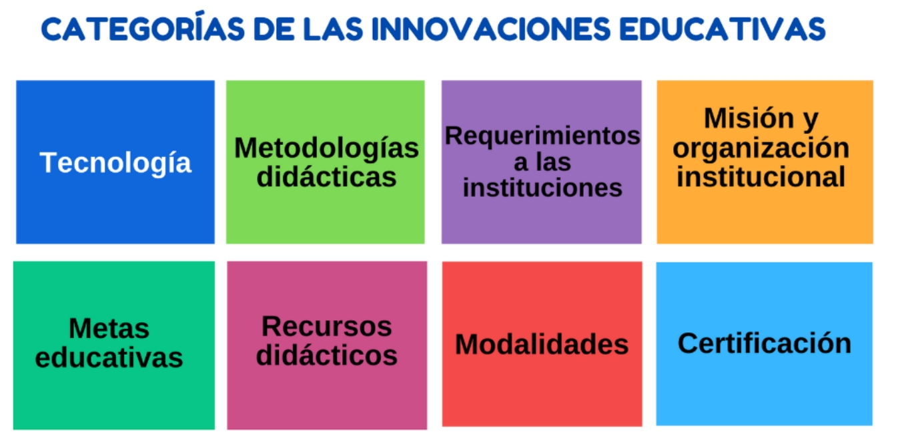

Tendencias de innovación en educación
Diversas instituciones se dan a la tarea de explorar cuáles son las propuestas de innovación que han repuntado en la educación y las han denominado como tendencias educativas. Para continuar la fase de IDEAR, te invitamos a que profundices en ellas. Analiza nuevamente si alguna puede ser de utilidad para solucionar el problema que delimitaste y toma notas para recuperarlas posteriormente.
Para comenzar, revisa el siguiente recurso, da clic en la imagen.
Esta herramienta puede funcionar como un índice de las tendencias. Fue elaborado con la información de tres fuentes que se analizaron y sistematizaron:
- El Reporte Horizon elaborado por el New Media Consortium/Educause.
- El informe Innovating Pedagogy de la Open University y el Centro para la Ciencia del Aprendizaje y la Tecnología (SLATE, por sus siglas en inglés) de la Universidad de Bergen en Noruega.
- Los folletos EduTrends del Observatorio del Tecnológico de Monterrey.
Hemos organizado las tendencias en innovación educativa en las siguientes categorías:
Para saber más
Para adentrarte más en estas tendencias educativas, explora los siguientes recursos:
https://observatorio.tec.mx/
El Tec de Monterrey tiene una larga trayectoria en el tema de la innovación en educación, en este sitio se presentan publicaciones, videos, cápsulas sobre diferentes innovaciones y, particularmente presentan los EduTrends, que son publicaciones en las que analizan las tendencias educativas con mayor impacto en educación.
https://library.educause.edu/resources/2019/4/2019-horizon-report
Este reporte se ha realizado desde hace 17 años a partir de un análisis de literatura reciente y la discusión de un grupo de expertos. Este año está a cargo de EDUCAUSE y presenta seis tendencias clave, seis cambios significativos en educación y seis desarrollos en tecnología educativa en educación superior.
http://www.open.ac.uk/blogs/innovating/
Cada año un grupo de académicos del Institute of Educational Technology in the Open University en colaboración con Norway´s Centre for the Science of learning & Technology (SLATE) genera reportes sobre los nuevos términos, teorías y prácticas en educación o aquellos que tienen el potencial de ser utilizados para transformar la educación.
https://zenodo.org/record/3258900#.XWAWruhKiUl
En esta conferencia impartida en las jornadas de innovación educativa organizada por la Facultad de Economía y Empresa de la Universidad del País Vasco. Los autores clasifican las tendencias de innovación educativa con base en su proximidad al aula y describen un proceso para facilitar su integración en la docencia.
¡Felicidades! Ya has explorado diferentes sitios que publican tendencias de innovación educativa en educación superior, ¿Identificaste algunas que ya has utilizado? ¿Cuáles pueden ser de utilidad para solucionar el problema que has seleccionado abordar?